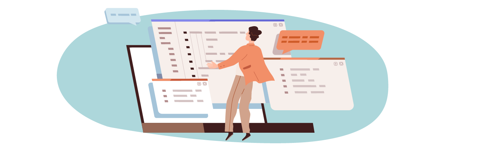

Legal situation
of web scraping
And how to evaluate the legality of your scraping project
Research Relevance
Image: Springer Nature
Value of Data for Research
- In the past, finding data for research projects was challenging and expensive. But with the growth of digital technology and the internet, there’s now an abundance of data available online.
- This data provides a detailed and real-time picture of various processes, relationships, and interactions in society, allowing researchers to answer new and old research questions with greater accuracy and efficiency 1.
- Text and Data Mining (TDM) is a data collection method that allows for the automated extraction of insights and information from large amounts of text or data resources 2, whereas web scraping is a data collection method that allows for the automatic extraction of information from websites and its organisation in a structured format 3.
- The information acquired through TDM can be used to address various scientific and societal challenges, such as tracking the spread of diseases like COVID-19 or combating misinformation 4.
Legal Challenges
Image: OpenClassrooms
Copyright Laws
- TDM research is limited by a patchwork of copyright laws across different jurisdictions.
- Text, images, and other materials used by TDM researchers are subject to copyright law, which gives the owner the right to prohibit exploitation without permission.
- Although some publishers provide limited copyright licences for TDM use, paid licencing is not an affordable option for many critical TDM projects 4.
Research exceptions in copyright laws
- Nearly all countries provide strong copyright protection based on multiple international treaties.
- These treaties require countries to enforce high copyright standards, but they allow for exceptions, such as those permitting research, to be decided by national legislatures and courts 4.
- This results in the varied and inconsistent landscape of exceptions depicted in the figure on the right.

Image: ADAPTED BY N. CARY/SCIENCE
Legal Compliance
in Web Scraping
Terms of Service
A Terms of Service (ToS), Terms of Use, or Privacy Policy can be found on almost every website. Therefore, the following question arises: Do we have to abide by the website’s Terms of Services?
The response is based on the kind of legal terms of service that are in place:
- clickwrap: terms are considered clickwrap agreements where the user is required to take an action by which he confirms the consent to the ToS;
- browsewrap: terms are considered browsewrap agreements if they are posted on a website, typically via a link at the bottom of the page;
- scrollwrap: sometimes seen as a sub-category of clickwrap, a scrollwrap agreement requires the users to scroll through the text of the ToS before they get to the “I Agree” button;
- sign-in-wrap: sign-in-wrap agreements are a hybrid of browsewrap and clickwrap. The act of acceptance here is the signing in or logging in with a note stating that by doing so, you are agreeing to the ToS 11.
Clickwrap vs Browsewrap
| Clickwrap: ToS that you must explicitly agree to. |
Browsewrap: ToS that are buried on the site. |
|---|---|
| - If you have to explicitly agree to the ToS in any way (such as by logging in, clicking ‘I agree’ or ‘OK’, or downloading the app), these are click wrap ToS. | - These ToS are usually accessible via a link at the bottom of a webpage. |
| - You are informed of the existence of the ToS, and you are actively agreeing to them. | - They state that you agree to the terms simply by using or browsing the site. |
| - Courts have ruled that your explicit agreement creates a binding contract that you must follow. | - Most courts have ruled that this type of ToS is unenforceable, so even if the terms forbid you from using the service, you may not be in violation of them 9. |
Copyright
Copyrighted data refers to content that is owned and controlled by businesses or individuals with regards to its replication and capture. The fact that data is available on the internet does not imply that anyone can extract and store the information 5.
- Copyright is the exclusive legal right over a physical piece of work. Examples include: articles, videos, movies, pictures, stories, music, or databases.
- Copyright does not protect ideas, concepts, systems, or methods of doing something 12.
- There are some exceptions to the copyright law such as research, teaching, parody, critique, news reporting, or commentary. However, each instance of potential copyright infringement must be evaluated individually as copyright issues are not always unambiguous like personal data issues.
- Limiting the extraction to factual matters, such as names of products and prices, may also be acceptable without violating copyright laws as facts are usually not protected by such laws 5.
US: Digital Millennium Copyright Act
- Scraping facts is allowed 9.
- Fair Use Doctrine:
- purpose and character of the use matters, including whether the use is of a commercial nature or is for nonprofit educational purposes;
- nature of the copyrighted work - the degree to which the work that was used relates to copyright’s purpose of encouraging creative expression;
- amount and substantiality of the portion used in relation to the copyrighted work as a whole;
- effect of the use upon the potential market for or value of the copyrighted work 13.
- Limited database protection 9.
EU: Copyright Directive
- Scraping facts is allowed but may vary in country specific law.
- Copyright exceptions are country specific.
- There is no ‘fair use’ doctrine in EU copyright law comparable to that of the US. Instead, EU law provides an explicit list of exceptions from copyrights granted to the rights holders, each with a specific scope 14.
- Broad database protection based on Database Directive 9.
Database Rights
Database rights are a subset of copyright. A database is an organized collection of materials that allows users to search and access individual pieces of information.
Copyright law protects databases when the way the data is selected or arranged is original and creative. In the EU, databases are protected under the Database Directive.
When scraping a data source that might fall under database rights, decision-makers should consider:
- scraping only some data,
- scraping only the data itself (without the replication of the organization of that data),
- limiting the data scraped to factual or non-copyrighted data 5.
Because the copyright protects the structure and organisation of the database (rather than the data contained within), scraping cannot result in copying and, for example, republishing the original database’s structure (or a substantial part of it) 10.
The TDM Exception
- The new DSM Directive permits scraping (reproduction and extraction) of data from databases for the purposes of text and data mining, even if the data is protected by copyright.
- However, the TDM exception is limited: database owners have the option to restrict the reproduction and extraction of databases and their content.
- That restriction must be implemented in such a way that bots and crawlers, among others, can see it (therefore, on a website there should be installed for example a special programme communicating visiting scraping programmes that scraping is prohibited).
- Therefore, unless you take a large amount of data/structure and later republish or sell it, there is a good chance you will not violate any intellectual property rights 10.
Personal Data
- Personal data, or personally identifiable information (PII), refers to any data that can directly or indirectly identify an individual.
- Common types of personal data include name, email, phone number, address, user name, IP address, date of birth, employment information, bank/credit card information, medical data, and biometric data.
- Public personal data is not an exception so analysis must be conducted before scraping it.
- Different legal jurisdictions (US, EU, Canada, Australia etc.) have different regulations for personal data so you need to identify the jurisdiction in which the data owners reside 5.
GDPR Compliance
- The General Data Protection Regulation (GDPR) covers the European Economic Area (EEA), which includes all EU countries, plus Iceland, Liechtenstein, and Norway.
- Although it was drafted and passed by the European Union (EU), it imposes obligations on all organisations that target or gather information about EU citizens 6.
- To use or store personal data of EU citizens, a company or an organisation must comply with one or more of the legal reasons described by GDPR. You may, therefore, need either to receive a consent of a person of which data you’re going to process, to be performing a task carried out in the public interest or, as a controller or even as a third party, to have a legitimate interest to process the data and such processing is necessary to achieve that interest 10.
Lawful Reasons (GDPR)
- Contract - an organisation has a contract with the data subject (person whose data we have), for example, a contract to supply goods or services or an employment contract.
- Legal Obligation - an organisation is fulfilling a legal obligation, such as when data processing is required by law.
- Public Task - to complete a public task, mostly relating to the tasks of public administrations such as schools, hospitals, and municipalities.
- Vital Interest - when data processing is in the data subject’s vital interests, for example, when this might protect their life.
- Legitimate Interest - for example, when a bank uses personal data to determine whether the data subject is eligible for a higher-interest savings account.
In all other cases, the company or organisation must obtain the data subject’s permission (known as “consent”) before collecting or reusing their personal information 8.
Type of Personal Data (GDPR)
Next to establishing the lawful reason for scraping data, you should also consider the type of personal data being collected. Sensitive data is a subject to additional rules and requires explicit consent to be given for this data to be scraped and stored.
Sensitive data includes:
- racial or ethnic origins,
- genetic data,
- political opinions,
- biometric data that can uniquely identifying someone,
- religious or philosophical beliefs,
- health, sex life or sexual orientation data,
- or trade union membership.
Therefore, you should avoid scraping this data unless you have explicit consent and legitimate reason to do so 7.
Data Protection Principles (GDPR)
If you process data, you have to do so according to the data protection principles:
- Lawfulness, fairness and transparency - Processing must be lawful, fair, and transparent to the data subject.
- Purpose limitation - You must process data for the legitimate purposes specified explicitly to the data subject when you collected it.
- Data minimization - You should collect and process only as much data as absolutely necessary for the purposes specified.
- Accuracy - You must keep personal data accurate and up to date.
- Storage limitation - You may only store personally identifying data for as long as necessary for the specified purpose.
- Integrity and confidentiality - Processing must be done in such a way as to ensure appropriate security, integrity, and confidentiality (e.g. by using encryption).
- Accountability - The data controller is responsible for being able to demonstrate GDPR compliance with all of these principles 6.
Data Policies (GDPR)
Even when you received an explicit consent from the data subject, you need to ensure that the correct data retention and access policies are in place:
- Ensure that data subjects are aware of the company’s data protection and privacy policy.
- Comply with Data Subject Access Rights (DSAR), including the right to withdraw consent, request a copy of data, or request deletion of data.
- If consent is withdrawn or a DSAR for deletion is received, delete or anonymize the personal data as it is no longer legally justifiable to retain it 7.
Residential IPs (GDPR)
Residential proxies provide real IP addresses of actual devices. When using a residential IP for scraping (or even just accessing web pages), you appear to be accessing websites and social media platforms from an actual home-based IP 15.
- IP addresses are considered personally identifiable information (PII) under the GDPR regulation.
- Ensure that any EU residential IPs used as proxies are GDPR compliant.
- Obtain explicit consent from the owner of a residential IP before using it as a web scraping proxy.
- If obtaining residential proxies from a third-party provider, ensure that they have obtained consent and are in compliance with GDPR before using the proxy 7.
Evaluate the Legality
of Your Scraping Project

Step 1: Territorial Scope
It’s important to consider the territorial scope when evaluating the legality of a web scraping project so you can ensure that it is compliant with the laws of the relevant jurisdictions.
- Check the jurisdiction of the website: Determine the location of the website and the jurisdiction under which it operates.
- Check the jurisdiction of the data subject: If the website contains personal data, determine the jurisdiction of the data subject.
- Check the jurisdiction of the scraper: Determine the location of the scraper and the jurisdiction under which it operates.
- Consider cross-border data transfer restrictions: Some countries have restrictions on the transfer of personal data outside of their jurisdiction. Make sure to understand any applicable restrictions and ensure that the data being scraped is being transferred in a legal manner.
Step 2: Personal Data
- Is personal data involved?
- If you collect or hold data of EU citizens, do you have the lawful basis for processing based on one of the following conditions?
- consent of the data subject;
- contract with the data subject;
- necessary for compliance with a legal obligation;
- necessary in order to protect the vital interests of the data subject or a third party;
- necessary for the performance of a task in the public interest or in the exercise of official authority vested in the controller;
- necessary for the purposes of the legitimate interests pursued by the controller or by a third party, except where such interests are overridden by the rights of data subject.
Step 3: The Type and Use of Data
- Do you really need personal data? You should always anonymize the personal data if there is an option to do so.
- Is the data considered to be sensitive? Scraping sensitive data means that you are subject to additional rules and require specific consent to be given for this data to be scraped and stored. Therefore, unless you have clear explicit consent and legitimate reason to scrape this data you should avoid scraping it.
- What is the extent of the proposed data collection? An important aspect of GDPR is that companies should only collect and handle the minimum amount of data necessary to successfully perform a specific task.
- How you plan to use the data post-extraction? Under GDPR you need to have a clear and legal reason for scraping data and be able to demonstrate that it will be used for legitimate purposes.
Step 4: Copyright Data
- Is the data protected by copyright law?
- Is the data factual? Factual matters, such as names of products and prices, may also be acceptable without violating copyright laws as facts are usually not protected by such laws.
- Does a data source fall under database rights? Copyright law protects databases when the way the data is selected or arranged is original and creative.
- Are you eligible for the TDM exception? Scraping scraping of data from databases for the purposes of text and data mining might be permitted, even if the data is protected by copyright.
Step 5: Terms and Conditions
- Did you explicitly agree to the Terms of Service in any way? Review the terms and conditions to determine if data extraction would be in breach of these ToS.
- Are you scraping data behind a login? Logging into a website to extract data can raise legal issues. Logging in typically requires accepting the website’s terms and conditions (T&C) which might explicitly state that automatic data extraction is prohibited.
- Are you scraping data from a mobile app? By downloading the app, you agree to terms and conditions.
References
- https://digitalcommons.murraystate.edu/faculty/86/
- https://www.springernature.com/gp/researchers/text-and-data-mining
- https://www.zyte.com/learn/what-is-web-scraping/
- https://www.science.org/doi/pdf/10.1126/science.add6124
- https://www.zyte.com/blog/solution-architecture-part-3-conducting-a-web-scraping-legal-review/
- https://gdpr.eu/what-is-gdpr/
- https://www.zyte.com/blog/web-scraping-gdpr-compliance-guide/
- https://europa.eu/youreurope/citizens/consumers/internet-telecoms/data-protection-online-privacy/index_en.htm
- https://www.zyte.com/learn/is-web-scraping-legal/
References
- https://discoverdigitallaw.com/is-web-scraping-legal-short-guide-on-scraping-under-the-eu-jurisdiction/
- https://blog.apify.com/enforceability-of-terms-of-use/#how-do-scrollwrap-agreements-differ-from-other-contracts
- https://www.copyright.gov/help/faq/faq-protect.html
- https://www.copyright.gov/fair-use/
- https://www.lexology.com/library/detail.aspx?g=1013cebf-9e8e-41a0-bac0-595f0e04133b
- https://netnut.io/10-reasons-to-use-residential-proxies-for-scraping/